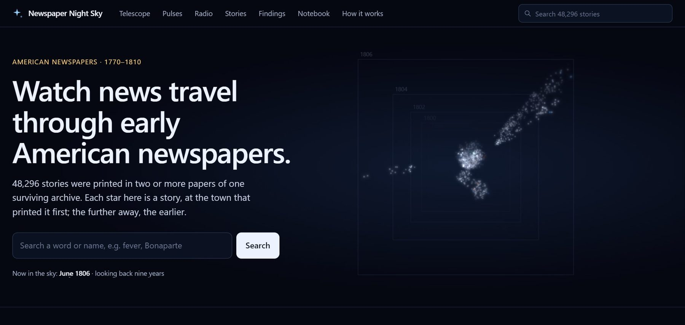
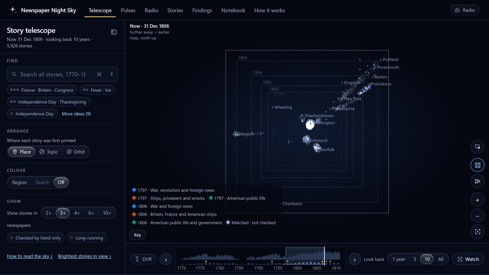
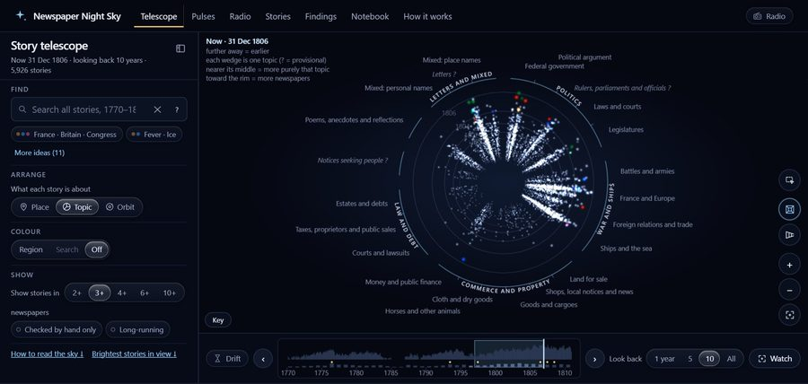
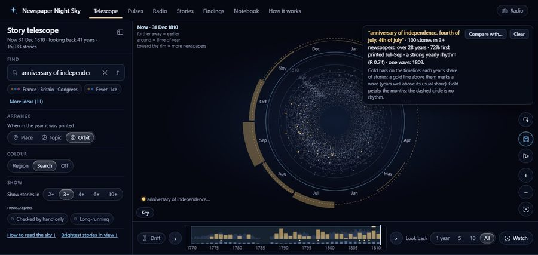
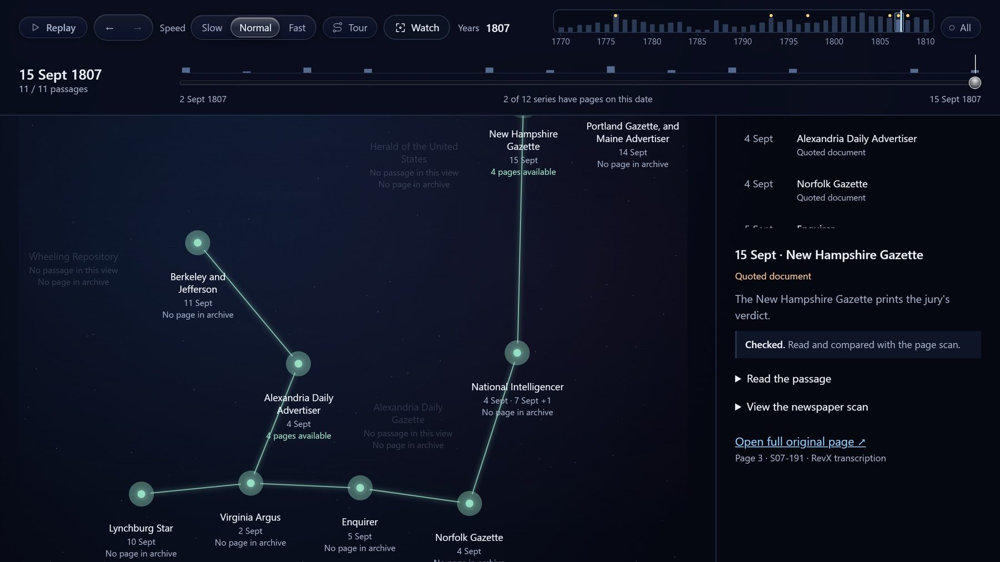
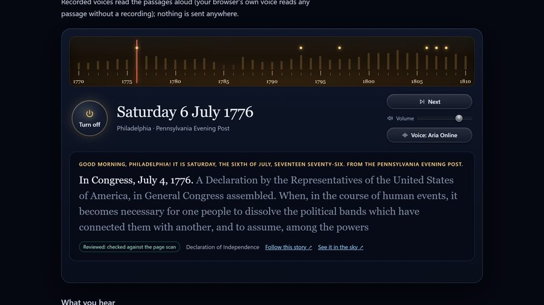
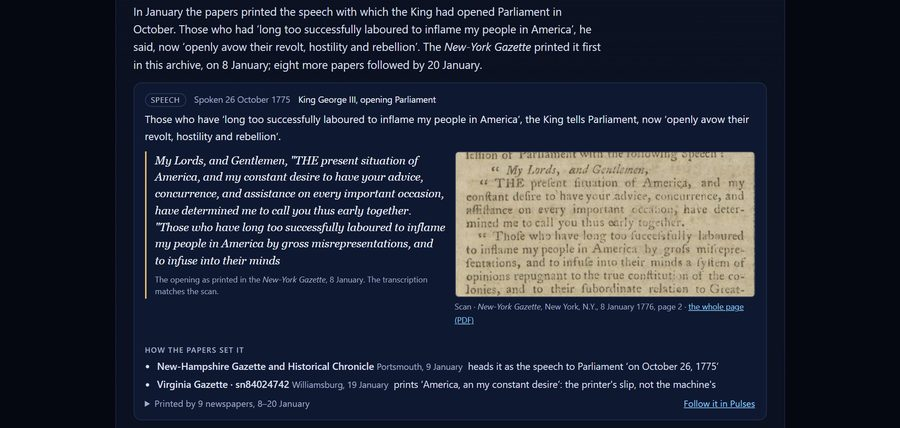

02 · Oct – Nov 2026 · Major Studio 1
Newspaper Night Sky
How news moved through American newspapers, 1770–1810. In those decades, papers spread news by reprinting each other's stories. I found every story that appears in two or more papers in one surviving archive (48,296 of them) and made them into a night sky you can search, sort, follow and listen to.
- Role
- Solo project: data pipeline, research, design and code
- Context
- Major Studio 1, MS Data Visualization, Parsons. Presented on Nov 17, 2026 to the class and the Smithsonian team behind the dataset
- Data
- Smithsonian Revolution Crossroads collection, drawn from the Library of Congress's Chronicling America: 77,793 pages from 110 newspapers
Tools: Python, SQLite, NMF topic modelling, text-reuse matching, three.js/WebGL, Canvas, Kokoro text-to-speech. AI help: OpenAI Codex and Claude Code for implementation.

Every story is a star
In the Story telescope, each reprinted story is a star and time runs into the depth: the further away a star is, the earlier the story. Viewers can arrange the sky by Place (the town of first printing), Topic (radial wedges from topic modelling) or Orbit (time of year), search it, compare up to three words in colour, and let time drift.



Follow one story from paper to paper
In Pulses, each newspaper is a point on a map that lights up on the days it printed a story. A constellation line joins one story's printings, with the passage and the page scan alongside.

Observed facts, not big claims
The site only shows what the archive supports: "newspaper X printed this on date Y." It never draws who-copied-whom lines, and it keeps gaps visible, because a thin year is a gap in the archive, not silence. Evidence comes in two tiers that stay apart everywhere:
143 reviewed stories (1,659 printings), each read and checked against the page scans, and 48,270 matched stories found automatically by shared wording and labelled "not checked." The pipeline is published as versioned data releases with validation checks.
Hear a day's news
Radio is a dial tuned to a past date. It greets the town ("Good morning, Philadelphia! It is Saturday, the sixth of July, 1776…") and reads that day's papers aloud from 8,660 recorded voice clips. Stories tells two storylines straight from the papers, with each transcription beside a crop of the original page. An exhibition mode loops the site on a large screen with QR codes.

